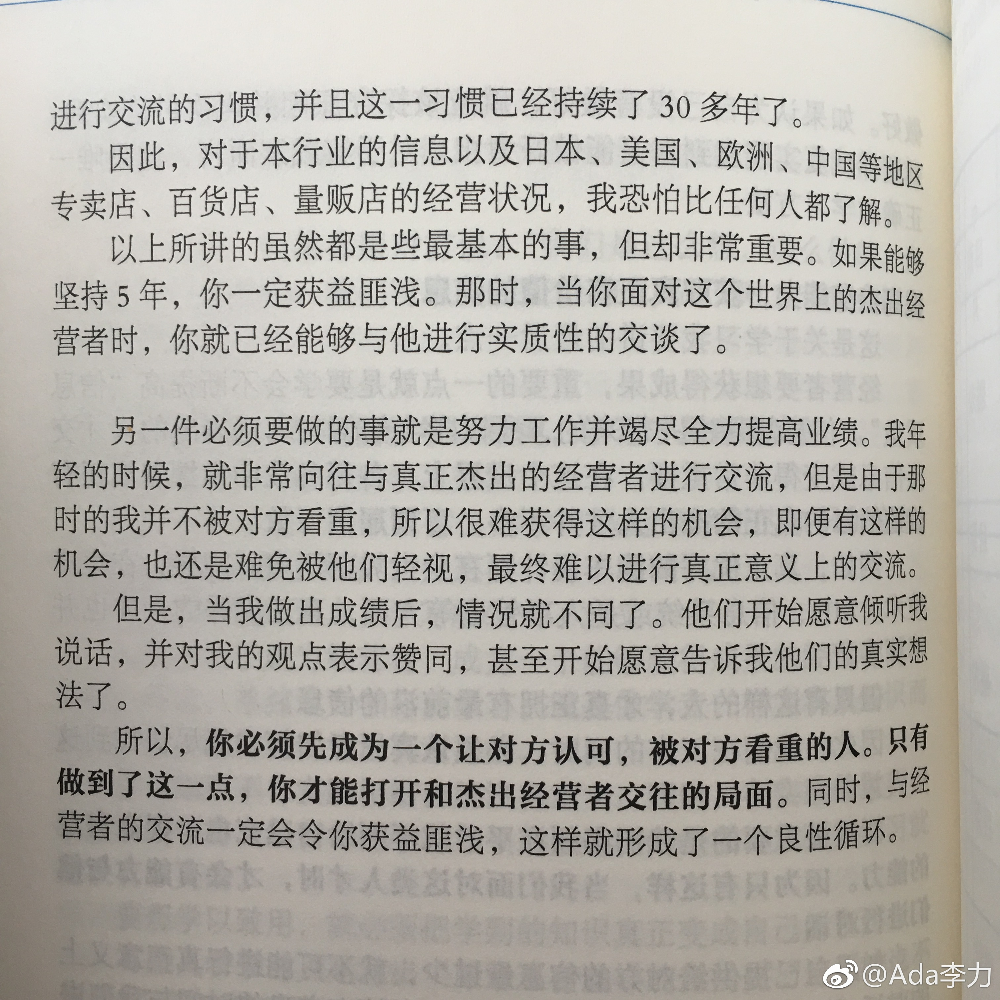

#优衣库老板成日本首富#柳井正的《经营者养成笔记》那本书干货满满，可以再读一遍。 查看图片@Ada李力:#读书#即使是优衣库创始人柳井正，也经历过人微言轻时，想与自己眼中优异的人对话而不得的情景。所以，经营思想如果没有业绩支撑，基本是空中楼阁，不会有人把它当回事儿。我相信，柳井正的企业经营思想，年轻时和他现在功成名就时，估计差异并不大。差异大的，仅仅是后来很多人愿意仰视他，听他说话了。做企业，业绩还是最基础的。没有业绩之前，情怀之类，还是少说些。
 查看图片
查看图片